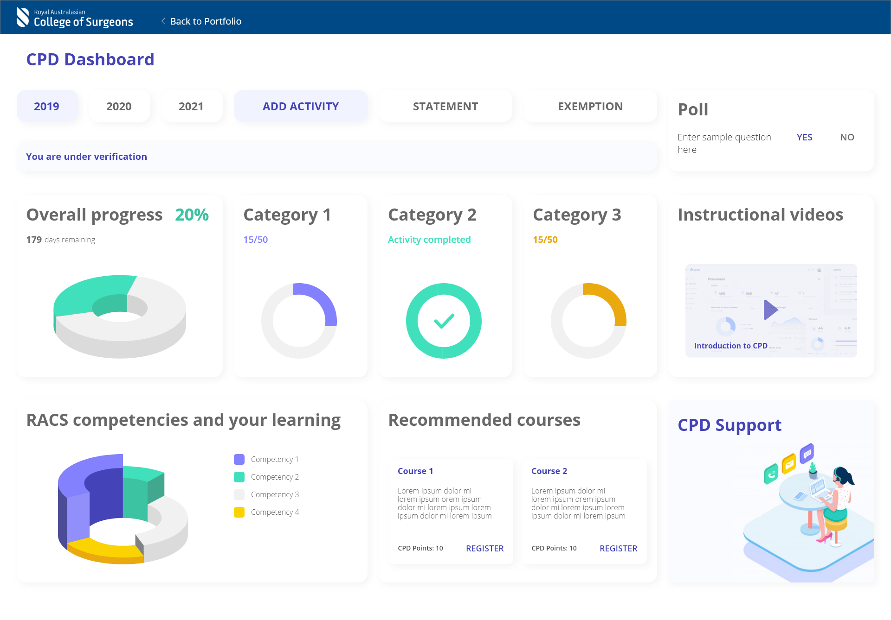
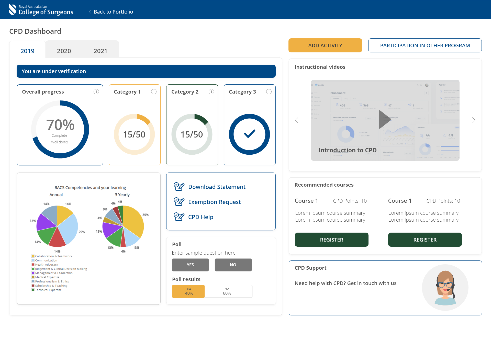

BACKGROUND
The Royal Australasian College of surgeons (RACS) is a non-profit organization that trains surgeons and maintains surgical standards in Australia and New Zealand. The Continuing Professional Development (CPD) application helps surgeons manage their professional development activities and mandatory requirements required by the medical boards for continued registration.
Before the application was developed we wanted to check what UI appealed to the users the most. To get user inputs we showcased 4 different high-fidelity prototypes of the dashboard.
MY ROLE
- I conducted user research and created 4 high-fidelity prototypes
PROBLEM
Surgeons are extremely time-poor and recording activities for professional development is not the most important task that they perform. The application used by them was not user-friendly and thus they had to spend too much time in recording their CPD activities. The application needed to be redesigned to solve this problem.
PROTOTYPES
Below are the concept design high high-fidelity prototypes
 